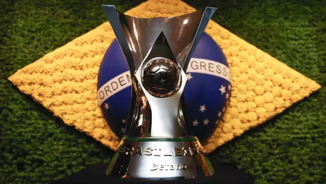
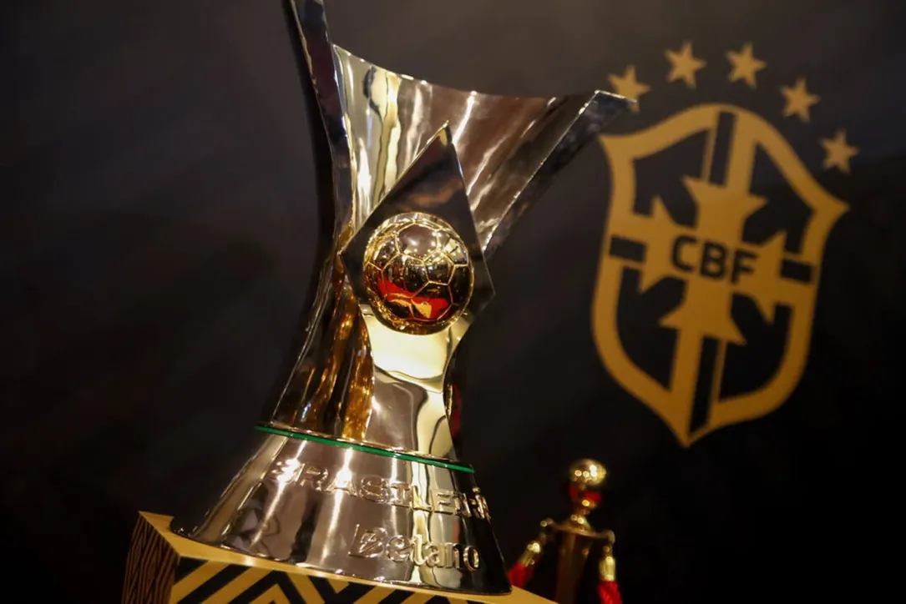

O Brasileirão é disputado anualmente e é considerado uma das ligas mais fortes do mundo. A competição é organizada pela Confederação Brasileira de Futebol (CBF) e envolve clubes de todo o Brasil. O torneio é dividido em duas divisões principais: a Série A, que é a elite do futebol brasileiro, e a Série B, que é a segunda divisão. Os clubes que se destacam na Série A têm a oportunidade de representar o Brasil em competições internacionais, como a Copa Libertadores e a Copa Sul-Americana.
Ler mais...
Sim, o Campeonato Brasileiro será paralisado por conta da Copa do Mundo de 2026. A pausa ocorrerá na 18ª rodada, marcada para o dia 31 de maio, e os jogos retornarão apenas no dia 22 de julho, após a final da Copa do Mundo, que acontece entre 11 e 19 de julho. Essa interrupção é parte do calendário oficial da CBF e visa garantir a preparação dos jogadores convocados para o Mundial.
Ler mais...